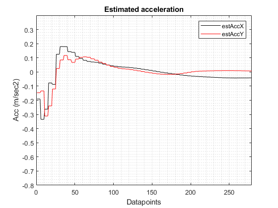
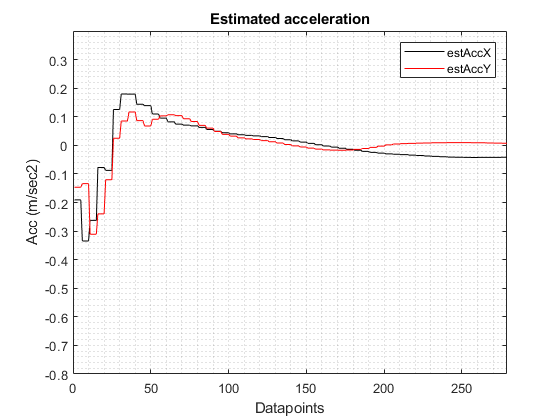

Contents
% MATLAB-R2019a version close all clc
Import the GPGAA data to MATLAB as a matrix
format longG GPGGAData = readmatrix('gps-GPGGA-data.txt', 'Delimiter', ','); IMUData = readmatrix('IMU_data.txt', 'Delimiter', {':',','}); % sampling time for each sensor and the corresponding timestamp for each % sensor measurement. sampleFreqGPS = 1; sampleFreqIMU = 5; deltaIMU = 1/sampleFreqIMU; deltaGPS = 1/sampleFreqGPS;
Using GPGGA standard:
$--GGA,hhmmss.ss,llll.ll,a,yyyyy.yy,a,x,xx,x.x,x.x,M,x.x,M,x.x,xxxx where lld ll.llll' N, and yyd yy.yyyy' W, represent latitude and longitude. Convert the /degree/minute format to /degrees If the num is 3713.9212, then GPGGA_minute = 13.9212 shift the decimal to left by 2 places
latDecShift = GPGGAData(:,3)*0.01; longDecShift = GPGGAData(:,5)*0.01; % Calculating the minute value using the shifted decimal data and % multiplying the value by 100 to minute value in yy.yyyy format latMinute = (latDecShift - floor(latDecShift)) * 100; longMinute = (longDecShift - floor(longDecShift)) * 100; % Calculating the degree value, yyd + (yy.yyyy/60) latDeg = (floor(latDecShift) + (latMinute(:)/60)).*GPGGAData(:,4); longDeg = (floor(longDecShift) + (longMinute(:)/60)).*GPGGAData(:,6); % Originial GPS data in latitude and longitude format. Slicing the data % required for sensor uncertainty latStatic = latDeg(1:69,1); longStatic = longDeg(1:69,1); % Slicing the data required for the actual motion latMotion = latDeg(70:end,1); longMotion = longDeg(70:end,1); % Converting latitude and longitude data to x-y coordinate frame using the % radius of the earth and the appropriate conversions to x and y axis (m) [deg2mx, deg2my] = deg2m(latDeg(1,1)); xInit = 1*deg2mx*(longDeg(1,1)); yInit = deg2my*(latDeg(1,1)); xCoord = (longDeg*deg2mx) - xInit; yCoord = (latDeg*deg2my) - yInit; % Data where no motion occurred (stationary) xCoordStatic = xCoord(1:69,1); yCoordStatic = yCoord(1:69,1); % Data for the actual motion xCoordMotion = xCoord(70:end,1); yCoordMotion = yCoord(70:end,1); % Calculating the current velocity of the cart using the data update of the % GPS sensor. Here data update rate is 1Hz. currVelX(size(xCoordMotion,1),1) = 0; currVelY(size(xCoordMotion,1),1) = 0; for i = 1:size(xCoordMotion,1)-1 currVelX(i,1) = (xCoordMotion(i+1,1) - xCoordMotion(i,1))/deltaGPS; currVelY(i,1) = (yCoordMotion(i+1,1) - yCoordMotion(i,1))/deltaGPS; end
Processing IMU data
The first 3 and last 3 columns reperesents the gyrometer and accelerometer data in (x,y,z) format respectively
IMUData = IMUData(:, all(~isnan(IMUData))); IMUDataAvg = mean(IMUData(1:300,:)); % Slicing the IMUData for the actual motion IMUDataMotion = IMUData(320:end,:); % Converting the gyrometer data from deg/sec to rad/sec IMUDataMotion(:,1:3) = IMUDataMotion(:,1:3)*(3.14/180); % Gyrometer sensor gyroRad = IMUDataMotion(:,1:3)/sampleFreqIMU; gyroX = IMUDataMotion(:,1); gyroY = IMUDataMotion(:,2); gyroZ = IMUDataMotion(:,3); % Accelerometer sensor accelG = 9.8; accelX = (IMUDataMotion(:,4)/IMUDataAvg(1,6))*accelG; accelY = (IMUDataMotion(:,5)/IMUDataAvg(1,6))*accelG; accelZ = (IMUDataMotion(:,6)/IMUDataAvg(1,6))*accelG;
Kalman filter setup and data processing
Defining the state transition matrix, here tempA defines the matrix for the state transition along X and Y, combining both of them gives the state transition matrix.
tempA = [1 deltaIMU 0.5*(deltaIMU^2); 0 1 deltaIMU; 0 0 1]; A = blkdiag(tempA, tempA); % Measurement matrix C = eye(6); C(2,2) = 0; C(5,5) = 0; % Initial state of the cart and Initializing covariance, measurement noise % covariance and process noise covariance matrix respectively. xkmin = zeros(6,1); P = (100^2)*eye(6); R = 10*eye(6); Q = 10*eye(6); % Total number of iterations as per the sensor data N = size(IMUDataMotion,1); % Error matrix for the estimates xDelta(N,1:6) = 0; % Definign timestamp for each recorded measurement for either of the sensor % using their defined sample rate. tIMU = 1:deltaIMU:size(latMotion,1); tGPS = 1:deltaGPS:size(latMotion,1); % ouput estimates matrix for position, velocity and acceleration along x % and y direction. estOut(N,1:6) = 0; % GPS data counter for comparing the timestamp of the data recorded using % IMU and the GPS sensor ctrGPS = 1; % Iterating over the collected datapoints using GPS and IMU sensor for k = 1:N % Prediction step for the kalman filter. [xk, P] = predictionStep(A, xkmin, P, Q); % updating previous state vector. This vector will get further updated % if GPS sensor is used. xkmin = xk; % If GPS data is available then update the Kalman gain if tIMU(k) == tGPS(ctrGPS) % Coordinate frame transformation for the accelerometer output % using the gyrometer data. RotMat = frameTrans(gyroRad(k,1), gyroRad(k,2), gyroRad(k,3)); newAccel = RotMat*[accelX(k,1) accelY(k,1) accelZ(k,1)]'; z = [xCoordMotion(ctrGPS,1) 0 newAccel(1) yCoordMotion(ctrGPS,1) 0 newAccel(2)]'; % Measurement update for the Kalman filter [y, K, P, xkk] = measurementUpdate(z, C, R, P, xk); % Calculating the error between the prediction and the measurement % update xDelta(k,:) = (xkk - xk)'; % Update GPS data counter ctrGPS = ctrGPS + 1; % Updating previous measurement xkmin = xkk; % Updating the error covariance matrix Q = xDelta(k,:)'*xDelta(k,:); end % Storing the measured estiamtes to the output matrix estOut(k,:) = xkmin'; end % Plot the curves for cart trajectory, velocity and acceleration using the % raw sensor data and the kalman filter estimates plotTraj(estOut(:,1), estOut(:,4), xCoordMotion, yCoordMotion); plotVelocity(estOut(:,2), estOut(:,5), currVelX, currVelY); plotAccel(estOut(:,3), estOut(:,6), accelX, accelY);
 
